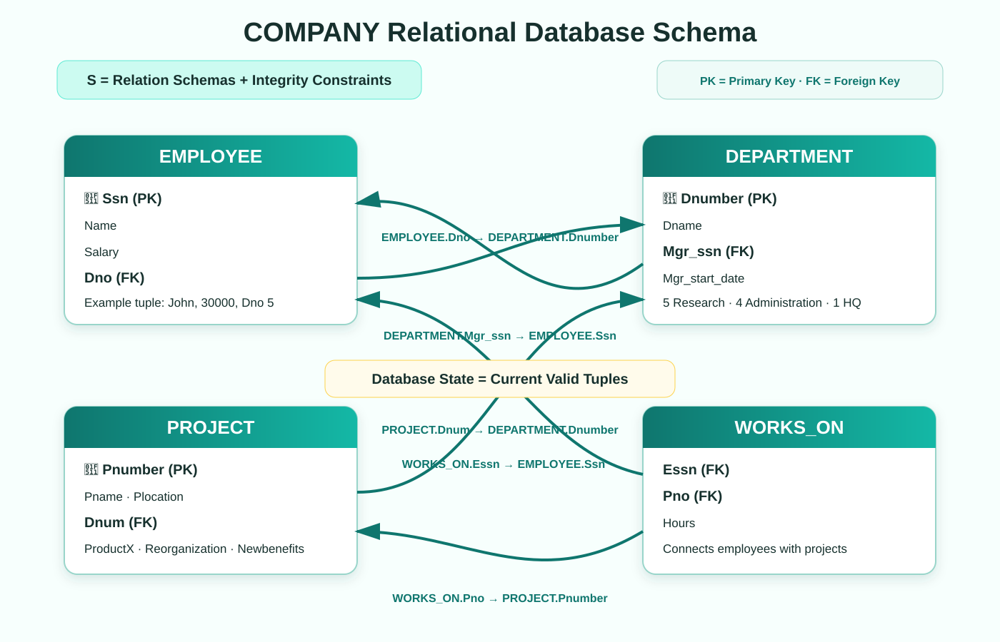

1. Relational Database Schema
A relational database schema is the framework that defines how relational data is organized, related and constrained.
A database schema S contains:
- a set of relation schemas; and
- a collection of integrity constraints.
Each relation schema specifies the table name, attributes and their domains. Together they keep data consistent and reliable within and across tables.
2. Three Main Components
Relation Schema (R)
Table structure written as R(A1, A2, …, An), where A1…An are attributes.
Attribute
A table column with a domain that limits its allowed type, format and values.
Database State (DB)
The current data in all relations. A valid state satisfies every schema constraint.

3. Attributes, Domains and Relation States
Domains stop values that have the wrong type, format or range.
- Ssn: may require the pattern XXX-XX-XXXX.
- Age:
INTEGER CHECK (Age BETWEEN 18 AND 65); Age 17 or 70 is rejected.
A relation state is the set of tuples in one table at a particular time. Every tuple must satisfy its attribute domains.
EMPLOYEE tuple: <John, Smith, 123-45-6789, 30000, 5> means John Smith earns $30,000 and belongs to department 5. The example state also includes Franklin Wong, Alicia Zelaya, Jennifer Wallace, Ramesh Narayan, Joyce English, Ahmad Jabbar and James Borg.
4. COMPANY Schema Example
| Relation schema | Primary key | Foreign key |
|---|---|---|
| EMPLOYEE(Ssn, Name, Salary, Dno) | Ssn | Dno → DEPARTMENT.Dnumber |
| DEPARTMENT(Dnumber, Dname, Mgr_ssn, Mgr_start_date) | Dnumber | Mgr_ssn → EMPLOYEE.Ssn |
| PROJECT(Pnumber, Pname, Plocation, Dnum) | Pnumber | Dnum → DEPARTMENT.Dnumber |
Department state: Research (5), Administration (4), Headquarters (1), with manager SSNs and start dates.
Project state: ProductX, ProductY and ProductZ belong to department 5; Computerization and Newbenefits to department 4; Reorganization to department 1.
EMPLOYEE.Dno = 5 is valid because DEPARTMENT.Dnumber 5 exists. Inserting Dno = 10 is rejected when department 10 does not exist.
Integrity Constraints in the Schema
- Key: key values must uniquely identify tuples.
- Entity integrity: primary-key attributes cannot be NULL.
- Referential integrity: a foreign key must match the related primary key or be permitted NULL.
5. Superkeys, Candidate Keys and Primary Keys
A superkey is any attribute combination that uniquely identifies a tuple. A candidate key is a minimal superkey with no redundant attribute. A primary key is the selected candidate key and must be unique and non-NULL.
CAR example: CAR(License_number, Engine_serial_number, Make, Model)
- License_number alone is a candidate key.
- {License_number, Engine_serial_number} is a superkey but not a candidate key because it is not minimal.
In EMPLOYEE, Ssn is the primary key; Ssn = NULL violates entity integrity and is rejected.
6. Relationships and Foreign Keys
WORKS_ON(Essn, Pno, Hours) creates the employee–project relationship:
- Essn → EMPLOYEE.Ssn
- Pno → PROJECT.Pnumber
- Hours records the work allocation and may be NULL in the supplied sample.
Example assignments include employee 123456789 on projects 1 and 2, employee 333445555 on projects 2, 3, 10 and 20, and employee 999887777 on projects 30 and 10.
Violation case: Deleting an EMPLOYEE.Ssn while the same value remains in WORKS_ON.Essn breaks referential integrity unless an action such as CASCADE or SET NULL is defined.
7. IBPS SO Quick Revision
- S = relation schemas + integrity constraints.
- R(A1…An) represents a relation schema and its attributes.
- Domain defines valid values; relation state is the current tuple set.
- A valid database state satisfies all constraints.
- Primary keys uniquely identify and cannot be NULL.
- Candidate key = minimal superkey; a superkey may contain extra attributes.
- Foreign keys create table relationships and preserve consistency.
- EMPLOYEE.Dno and PROJECT.Dnum reference DEPARTMENT.Dnumber.
- DEPARTMENT.Mgr_ssn and WORKS_ON.Essn reference EMPLOYEE.Ssn.
- WORKS_ON.Pno references PROJECT.Pnumber.
Most likely questions: Current valid data—database state. Allowed attribute values—domain. Minimal superkey—candidate key. Dno without matching department—referential violation.